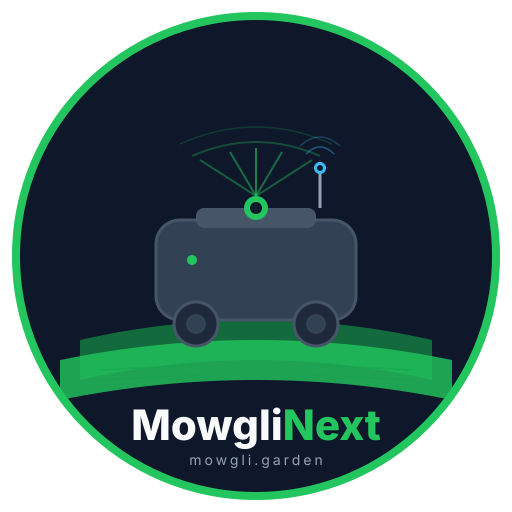

Open-source autonomous robot mower built on ROS2 Jazzy. LiDAR SLAM, RTK-GPS, behavior trees, and intelligent coverage planning — all in one monorepo.
Real-time mapping and localization using SLAM Toolbox, optimized for outdoor environments. No pre-built maps needed.
Dual Extended Kalman Filter fusing wheel odometry, IMU, and RTK-GPS for centimeter-accurate outdoor positioning.
Reactive, composable control logic using BehaviorTree.CPP v4. Emergency guards, docking, coverage — all orchestrated by a single tree.
Fields2Cover v2 generates optimal boustrophedon mowing patterns with headland passes, configurable angles, and obstacle awareness.
Real-time collision monitor with polygon stop/slow zones. The robot navigates around obstacles, not just stops.
One-command deployment with Docker Compose. Cyclone DDS for reliable inter-container communication on ARM boards.
React + Go web interface for configuration, map editing, area management, and real-time monitoring from any device.
Claude reviews every PR, proposes improvements weekly, and responds to @claude mentions in issues. Community + AI collaboration.
GPLv3 licensed. ROS2 stack, firmware, GUI, Docker configs — everything in one monorepo. Fork it, modify it, contribute back.
Get the full monorepo — ROS2 stack, Docker, GUI, sensors, and firmware.
git clone https://github.com/cedbossneo/mowglinext.git
cd mowglinext
Edit the robot config with your GPS datum, dock position, and sensor setup.
cp docker/.env.example docker/.env
nano docker/config/mowgli/mowgli_robot.yaml
Start all services with Docker Compose. GUI available at port 4006.
cd docker
docker compose up -d
500, 500B, LUV1000Ri
Rockchip RK3566/RK3588, Pi 4/5
u-blox ZED-F9P, RTK1010
LDRobot LD19, RPLiDAR
Custom Mowgli PCB
MowgliNext is built by the community with AI assistance. Claude reviews every PR, proposes improvements, and answers questions. Mention @claude in any issue or PR.